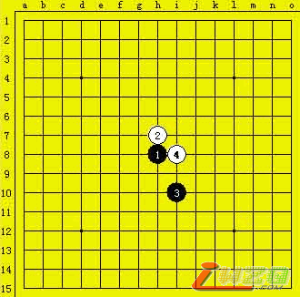
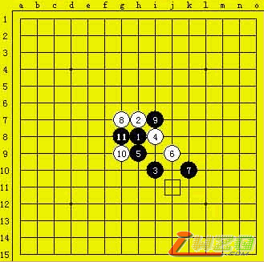
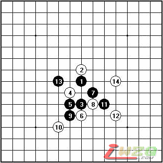
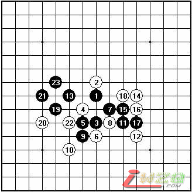

第五届上海连珠名人赛复赛上半区循环第二轮葛凌峰VS曹冬
#1 第五届上海连珠名人赛复赛上半区循环第二轮葛凌峰VS曹冬 作者：有志青年 发表时间：2007-5-3 16:03:39
原文地址：http://www.shwzq.com/online/ShowArticle.asp?ArticleID=1304
(18:13) 评论员 许斌 说：大家晚上好!
(18:14) 评论员 许斌 说：这一轮为大家直播的是葛凌峰七段VS曹冬六段的对局
(18:15) 评论员 许斌 说：晚上的网络好象还是不稳定,棋谱上传比较慢,请大家原谅
(18:16) 评论员 许斌 说：先介绍下这一轮的对阵情况
(18:17) 评论员 许斌 说：山口VS俞满江,山口开出了恒星,满江提出交换,我们将插播型传递他们的对局棋谱
(18:18) 评论员 许斌 说：曹东长考5分钟开出了山月局,葛凌峰提出交换
(18:21) 评论员 许斌 说：曹东第4手变为山残
(18:25) 评论员 许斌 说：曹冬选择了一个比较弱的变化,昨天山口和戈翀宇也走了一样的变化

(18:27) 评论员 许斌 说：昨天戈翀宇输给山口后,大家针对这个变化进行了初略的拆解,并未找到非常有效的手段能轻易取得胜利
(18:25) 评论员 许斌 说：曹冬选择了一个比较弱的变化,昨天山口和戈翀宇也走了一样的变化
(18:27) 评论员 许斌 说：昨天戈翀宇输给山口后,大家针对这个变化进行了初略的拆解,并未找到非常有效的手段能轻易取得胜利
(18:28) 评论员 许斌 说：相信曹冬这盘也是有备而来
(18:29) 评论员 许斌 说：葛凌峰选择了与昨天戈翀宇不一样的11手

(18:33) 评论员 许斌 说：这个变化和著名的一个水月必胜变化正好只差1路盘端,如果按水月必胜的下法是不能胜的
(18:36) 评论员 许斌 说：曹冬开始长考,利用这个间隙我向大家简单介绍下其他各桌的比赛情况
(18:37) 评论员 许斌 说：仇云飞执黑松月对战同门吴昊,目前双方局面均衡
(18:39) 评论员 许斌 说：俞满江对山口的对局,满江局面大优,我们相信不出意外,满江会战胜对手 ，下图为现在满江（黑）vs山口局面

(18:40) 评论员 许斌 说：下半区这轮对阵形势是:朱建峰丘月白棋对战张轶峰
(18:41) 评论员 许斌 说：冈部宽七段VS矶部泰山九段,冈部宽斜月执黑
(18:42) 评论员 许斌 说：三森云月开局,戈翀宇提出交换
(18:44) 评论员 许斌 说：我们发现一个有趣的现象,这次比赛丘月和斜月出现的比率很高,在连珠理论日益完善的今天,大家仍然会选择相对有自我发展空间的开局
(18:44) 评论员 许斌 说：哦..俞满奖满江和山口的对局结束了
(18:45) 评论员 许斌 说：满江不负众望,力克山口!
以下是满江vs山口的对局全谱，黑23双杀

(18:46) 评论员 许斌 说：看来山口选择开恒星的对手错了.选择的是满江这样研究丰富的棋手..
(18:48) 评论员 许斌 说：其实在山口多年前在日本大开恒星局的时候已经有过不少的研究
(18:50) 评论员 许斌 说：刚才吃饭的时候满江觉得不舒服,饭也没吃就上楼休息了,我们都替他捏了把汗
(18:51) 评论员 许斌 说：上海的比赛有过替补夺冠的先例,前面替补出战的陈文夏三段一路过关斩将,最后夺得了当时最具价值的一次冠军
(18:54) 评论员 许斌 说：现在让我们回到现场。葛凌峰陷入难局,长考中,不知葛凌峰是否能计算出最强的手段
(18:57) 评论员 许斌 说：另外间直播室冈部宽七段VS矶部泰山九段的最新棋谱也更新完毕,双方仍在鏖战中
(19:01) 评论员 许斌 说：职业棋手经常会频频长考,这也是职业棋手和一般爱好者一种最大的区别
(19:03) 评论员 许斌 说：葛凌峰有"葛帅"的称号,人如其名,在生活和棋盘上葛帅都有一份帅气,一份帅才
(19:04) 评论员 许斌 说：而曹东更象一位横刀立马的将军,且看元帅和将军的对局
(19:06) 评论员 许斌 说：现在的局面葛凌峰有点进退两难,只有进攻,但又很难一击必中
(19:09) 评论员 许斌 说：双方交换了几手,葛凌峰暂时没有什么优势